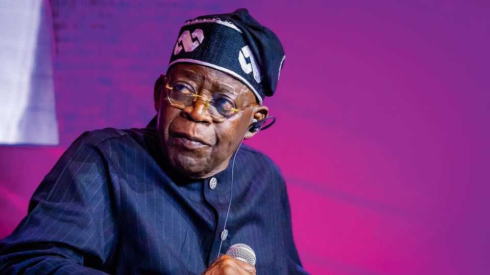
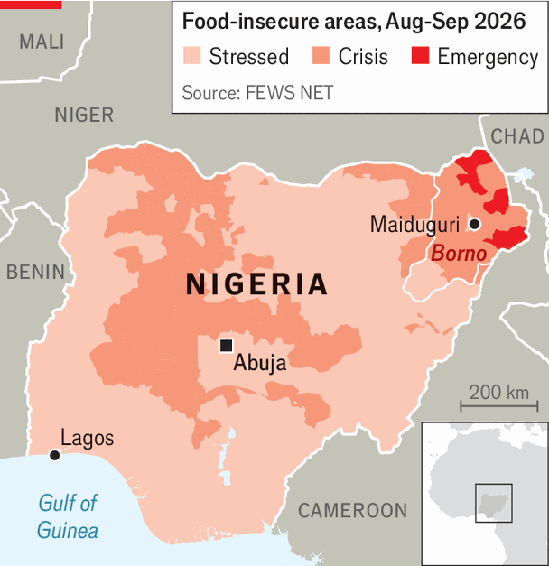

Nigerians dislike their president, but may re-elect him anyway
Political cynicism, a divided opposition and religion all play a role

Oct 1st 2026
With just over three months to go until Nigerians vote for a president, the incumbent does not look particularly worried about his re-election prospects. On September 29th Bola Tinubu (pictured), who expects to win a second term in January, returned from Paris after a month-long stay in Europe. He had previously extended his “working holiday” by several days, raising eyebrows at home.
On the face of it, Mr Tinubu’s cool is surprising. Nigeria is suffering a worsening security crisis, with people kidnapped and killed by bandits or insurgents on a near-daily basis. His economic reforms, though lauded by investors, have yet to make life better for most of the country’s 240m people. Add to that political challengers who are more popular than him, especially in the northern states worst affected by violence and economic deprivation, and the president should be quaking in his suede loafers. That he is not says less about him and more about Nigeria’s complicated electoral dynamics.
To understand the misery over which Mr Tinubu and his ruling All Progressives Congress (APC) have been presiding, consider Borno, in Nigeria’s north-east. The poor state, which the APC also runs, is in the grip of an insurgency that has raged unchecked for two decades. Jihadists fight both the government and each other. Rival factions make money by kidnapping schoolchildren and extorting or looting cash and grain from already poor farmers. Such violence has wrecked the economy, leaving young people jobless and traders without customers. One 27-year-old in Maiduguri, the capital, complains that he is forced to travel to neighbouring Chad to sell his grain, as locals cannot afford it. Youngsters “pack all their things and leave Borno state” for Chad, Cameroon or Ghana, he says, “because if you sit down here, there is no food in this country.”

Mr Tinubu’s re-election pitch is focused on reforms, such as the abolition of a pricey fuel subsidy, that have brought a degree of stability to Nigeria. Inflation has fallen, government revenue is rising and investment is picking up. But in Borno the reforms—combined with a lean harvest, aid cuts and rising energy prices following the wars in Ukraine and Iran—have made life harder. The annual inflation rate in August was still around 15%, with food inflation closer to 20%. Few people can afford enough to eat, prompting a hunger crisis in Borno and in neighbouring states (see map). The UN’s World Food Programme reckons malnutrition in the state is at its worst level for a decade.
Dr Nura Tukur, who runs a clinic for the starving operated by Save the Children, a charity, says there has been a sharp increase in the number of malnourished women and babies admitted over the past three years. July was the worst month since the clinic opened in 2016. Aisha Umara, who arrived several months ago with two starving triplets (one had died on the way), is now healthy enough to breastfeed. But her two six-month-olds still weigh just 2.5kg each. They are unlikely to survive being discharged to a home with no food in a village ruled by jihadists.
All this has hurt Mr Tinubu’s reputation in the north, where his party has traditionally done well, even though he personally lacks a base there. In the election in 2023 he won 54% of the vote in Borno. But recent polling by SBM Intelligence, a risk-advisory firm, suggests he is now less popular in the state than Peter Obi, another presidential candidate from the south, and Atiku Abubakar, a candidate with a big base in the north-east.
Some of Maiduguri’s residents say they are prepared to “fight back” at the ballot box in January. Yet in general, Mr Tinubu’s unpopularity will probably not be enough to dislodge him from the presidency. Incumbents, with access to the ruling-party machinery and plentiful cash to dole out goodies, have tended to have an advantage in recent Nigerian elections. It helps that the opposition is splintered and disorganised. Mr Obi has failed to form a coalition with Mr Abubakar. “Because it’s not a united ticket, that anti-APC vote is not coalesced into a single vote,” says Joachim MacEbong of Control Risks, a consultancy. In Maiduguri some people say they do not even know who else is on the ballot besides Mr Tinubu.
It also helps that Mr Tinubu and his vice-presidential candidate (who is a former governor of Borno state) are both Muslim, as are most people in the north. “The fact that the president has stuck with the Muslim-Muslim ticket resonates with quite a number of people,” says Cheta Nwanze, the boss of SBM Intelligence. Even voters who like Mr Obi may rule him out because he is a Catholic; the fact that he has a Muslim running-mate may not be enough.
Perhaps most significantly, voters in the north may not be too concerned by Mr Tinubu’s record because they already expect little from the government. “Many people are living where there has been no real security, no real health care, no real schools. Over time, people’s expectations get lower and lower,” says Mr MacEbong. One mother in Maiduguri says she will vote for Mr Tinubu as a “thank you” for the medicine at the government hospital. With their home state badly governed for so long, many people are more likely to trust God and their families to improve their lives than a government that rarely has.
Such cynicism is not limited to Borno. As long as the security crisis remains unresolved and economic growth, which is expected to hit 4.1% this year, does not translate into concrete improvements in Nigerians’ daily lives, many voters will remain disappointed. Yet few will use the ballot box to express their disappointment. In Borno, where a journey to the polling station could easily entail an encounter with militants, most will probably not bother voting at all. In 2023 turnout in the state was below 20%, even less than the dismal 27% nationwide. In parts of the south, especially Mr Tinubu’s home of Lagos, plenty may swallow whatever bad feelings they have about their day-to-day struggles and vote for their “son”. No wonder Mr Tinubu feels safe enough to take extended holidays in Paris. ■